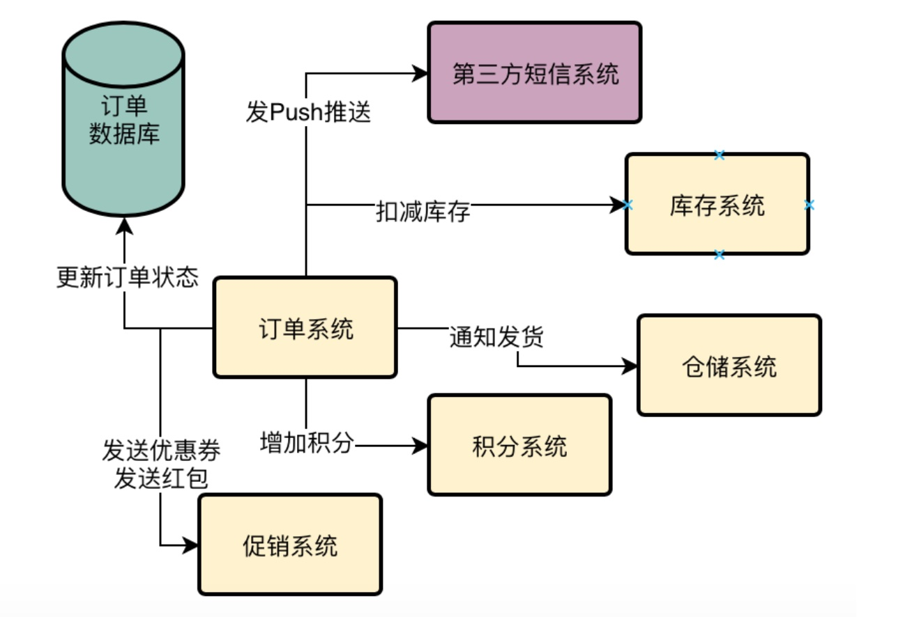
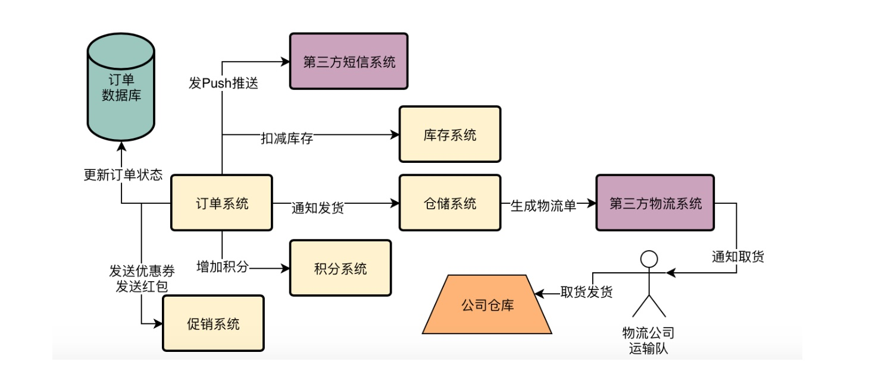
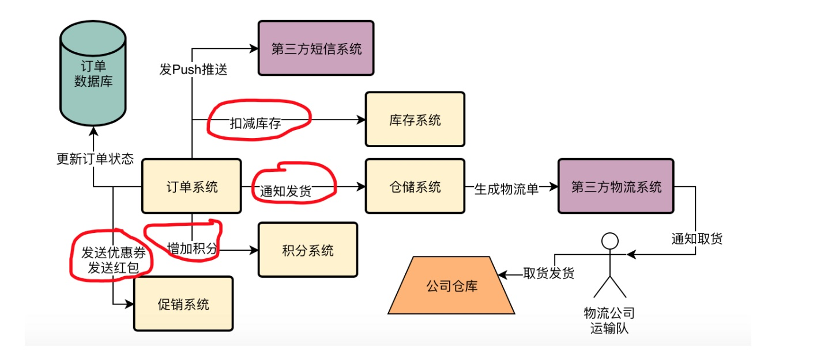
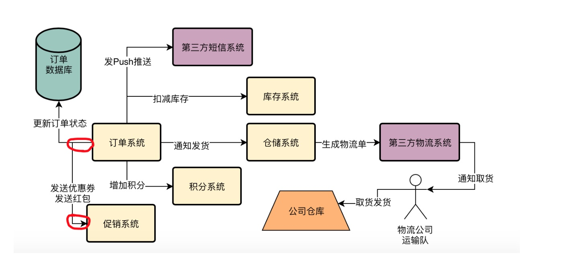
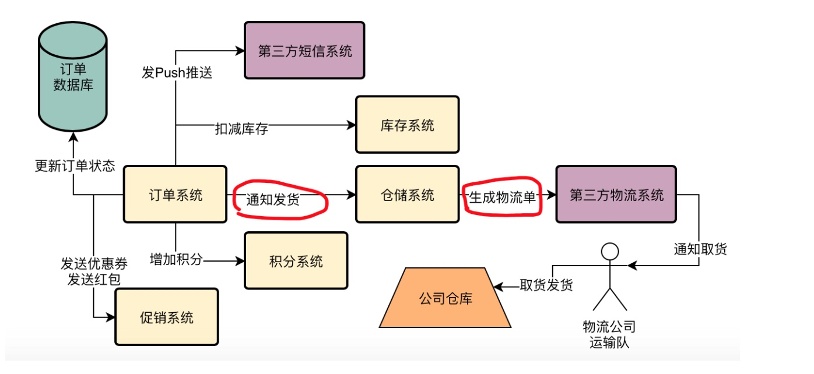

系统面临的现实问题：
第三方客户系统的对接耦合性太高，经常出问题！
1、重新观察订单支付的核心流程
经过了前几天的培训，小猛已经对目前订单系统的整体情况有了一个大致了解，而且也知道了系统目前面临的一些问题，包括一个订单在支付之前、支付过程中以及支付完成后退款时面临的一些技术隐患。
小猛心想，我这几天每天晚上整理笔记都到半夜，这些东西都理解的滚瓜烂熟了，应该没什么问题了。
没想到今天一早，小猛上班之后，又立马被明哥叫到了小会议室。
明哥进了会议室，二话不说，立马在小白板上画出了一个订单支付时的核心流程图。

小猛说：明哥，怎么又是这个图啊？这个流程我已经滚瓜烂熟了，问题不是很明显了么，就是支付之后流程里的步骤太多，耗时太长了，这样非常影响用户体验。
明哥微笑着对小猛说：那你觉得这个流程里真的就什么问题都没了吗？
小猛内心一阵紧张，赶紧又看了一遍，但是看来看去还是没发现什么问题。心虚的说道：我感觉没什么问题了啊。
2、老司机设计系统的必备经验：跟第三方系统打交道
明哥这个时候就开始给小猛解释起来了，毕竟也不能让这孩子太紧张了，一般很多年轻工程师，开发经验没那么丰富的，都不会意识到系统可能存在的一些技术隐患。
在订单支付的时候，大部分核心步骤，其实都是在自己公司的系统里完成的，比如你更新订单的状态，是在自己公司的订单系统内部完成的；你扣减库存，是找自己公司内部的库存系统完成的；你在增加积分的时候，是找自己公司内部的积分系统完成的；你在派发优惠券、红包的时候，是找自己公司内部的营销系统完成的。
但是这些都做完之后，最关键的一个环节呢？
商品的出库发货，你找谁？
一般电商公司内部都会有自己的仓储系统，管理各种仓库和商品的发货，通常来说会选择去找一个距离你用户最近的一个仓库，然后从里面调度一些商品进行发货，在发货的时候还需要调用第三方物流公司的系统，通知物流公司去仓库里取货发货。
对于物流公司而言，必然会由自己的物流系统收到货运通知之后，自动通知自己的快递员或者运输队到对方仓库里取货，然后去派发货物给购买商品的用户。
所以明哥在支付订单的核心流程图里又补充了几个步骤。

明哥指着上图的右侧添加的部分说：以前你以为通知仓储系统发货只是一个非常简单的事情，但是你看看，现在如果一个用户购买了商品，要把商品送到他的手上，其实还有不少事要做吧？
小猛不好意思的点点头，心想自己还是经验太浅了，怎么就没有去多想想呢。
3、到底什么叫做“系统之间的耦合”？
明哥接着说：没关系，其实很多年轻工程师在做开发的时候，往往思维非常的简单，很多人主要是关注自己手头的一些CRUD的工作。但是在复杂的互联网系统里，往往不是CRUD那么简单。
接下来，我就给你解释一个在系统设计上的一个概念，叫做“系统之间的耦合”
很多人经常听到“耦合”这个词，一直搞不懂到底什么叫做耦合？
其实这个东西有非常学术的说法，但如果按照那个来解释，应该就没几个人能听懂了。所以我会用非常通俗的语言来给你解释。
举个例子，比如在我们的订单支付流程里，订单系统其实是要调用很多其他系统的，比如库存系统、积分系统、营销系统、仓储系统，等等。
明哥说着，在图里画了好几个系统之间调用的红圈。

好，那么我们现在来思考一个问题，假设促销系统现在有一个接口，专门是让你调用了以后派发优惠券的，现在这个接口接收的参数有5个，你要是调用这个接口，就必须给他传递5个参数过去，这个是没的说的。
现在问题来了，负责促销系统的工程师某一天突然有一个新的想法，他希望改一改这个接口，在接口调用的时候需要传递7个参数！
一旦他的这个新接口上线了，你还是给他传5个参数，那么他那里就会报错，这个派发优惠券的行为就会失败！
那在这样的一个情况下应该怎么办？
很简单，你作为订单系统的负责人，必须要配合促销系统去修改代码，既然他要7个参数，那么你就必须得在代码里调用他的接口的时候传递7个参数。
并且你还得配合他的新接口去进行测试以及部署上线，你必须得围绕着他转，配合他。
明哥说着，在图里重新画了两个小红圈，代表订单系统和促销系统的接口调用的修改。

在这种情况下，就说明你的订单系统跟促销系统是强耦合的。因为促销系统任何一点接口修改，都会牵扯你围着他转，去配合他， 耗费你们订单团队的人力和时间，说明你们两个系统耦合在一起了。
要动一起动，要静一起静，这就是系统间的耦合。
明哥说到这里停顿了一下，看着小猛问：怎么样，理解了没有？
小猛若有所思的看着小白板上的两个红圈：有点懂了，又有点没懂，但是确实感觉对“耦合”这两个字的理解有那么点意思了。
明哥笑了笑：没关系，你之所以感觉没彻底懂，是因为你没配合其他团队的兄弟去干一些修改接口之类的破事儿，当你自己一边在重构订单系统，干的热火朝天，一边又被迫去花时间配合营销团队修改坑爹的接口的时候。。。
明哥停顿了一下，继续说：估计你心里一边在问候人家的直系亲属，一边狠狠的在你的笔记本上会写下几个字，“坑爹的耦合”！从此以后你对“耦合”就会理解深刻，并且深恶痛绝了。
小猛听完明哥自带画面感的一番描述，哈哈大笑，感觉自己对“耦合”的理解又更深了一点。
4、订单系统有没有跟第三方物流系统耦合？
接着明哥提出了一个问题：小猛，你现在思考一下，订单系统有没有跟第三方物流系统耦合呢？
小猛看着图，他发现按照明哥的说法，订单系统是跟仓储系统耦合，而仓储系统又跟第三方物流系统耦合，那么是不是说明，订单系统也间接的耦合了第三方物流系统？小猛提出了自己的思考。
明哥点点头说：非常正确，就是如此，你看图里我画的几个红圈的地方。

订单系统要调用仓储系统的接口去发货，仓储系统在接到订单系统的调动之后，又要同时去调用第三方物流系统去生成物流单，通知人家去取货。
所以在上图的流程中，必须要等到第三方物流系统返回确认信息之后，仓储系统才能返回结果，订单系统才能结束对仓储系统的调用。
想想看，在这个情况下，订单系统不就跟仓储系统、第三方物流系统，全部耦合在一起了吗？
5、跟第三方系统耦合的痛苦：性能差，不稳定
接着明哥脸上突然出现了一种非常复杂的表情：痛苦！嫌弃！有厌恶！五味杂陈。。。
为什么这么复杂的情感？明哥接着说：对我们多年设计系统的人来说，跟第三方系统的交互往往是最麻烦的。
因为对于我们自己公司内的系统，即使他有问题，所有代码、数据库都在自己公司，你可以去优化，你知道他如何运行，你知道问题在哪里，也知道怎么解决。
但是对于第三方系统的调用，那就不是那么回事了。你不知道他是怎么写的，甚至他的系统是用Go、C++、PHP写的都有可能。
那么问题来了，假如你调用他的接口，结果他的接口有时候速度很快只要20ms，有时候速度很慢要200ms，有时候调用很正常，有时候偶尔会调用失败几次，你怎么办？
你不知道他是如何实现的，不知道他问题在哪里，你更不知道如何解决他的问题，你也没资格去改动他的代码。问他们的工程师，人家根本不理你，就说一句：我们系统大部分情况下不是挺好的么！
所以你要记住一点：第三方系统，永远是不能完全信任的，他随时有可能出现意料之外的性能变差、接口失败的问题。
这就是你的系统跟第三方系统耦合在一起的痛苦：对方不可控，导致你的系统的性能和稳定性也不可控。
6、小猛的顿悟：第三方系统的耦合给订单系统带来了不确定性
小明听到这里，立马脑子里有一种顿悟的感觉，他跟着说，那岂不是我们的订单系统调用仓储系统，接着调用第三方物流系统，很可能被第三方系统给拖累？
万一他的性能突然降低，我们的系统性能就降低了，万一他接口突然调用失败，我们的这次操作也会失败，后续还要考虑重试机制？
明哥点点头：说的没错，所以在我们订单支付的核心流程里，其实还有这么一个技术隐患，耦合第三方系统带来的不确定性，也是需要后续我们去解决的。
小猛今天感觉又是慢满满的收获，若有所思的走出了会议室，决定今晚好好的吸收和消化今天学到的东西。